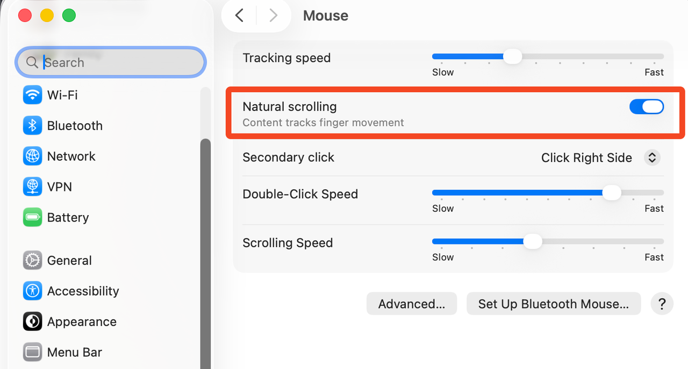
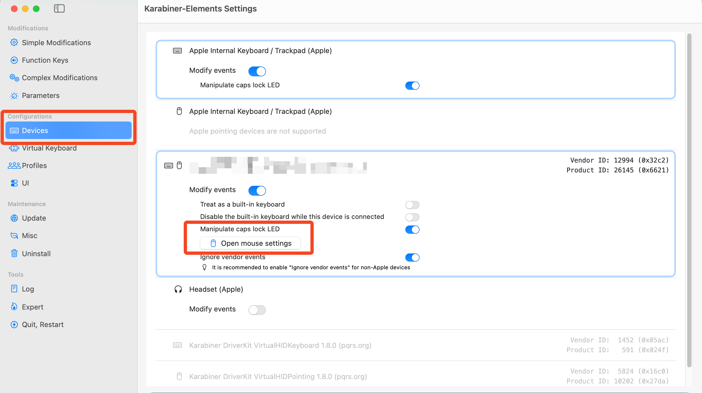
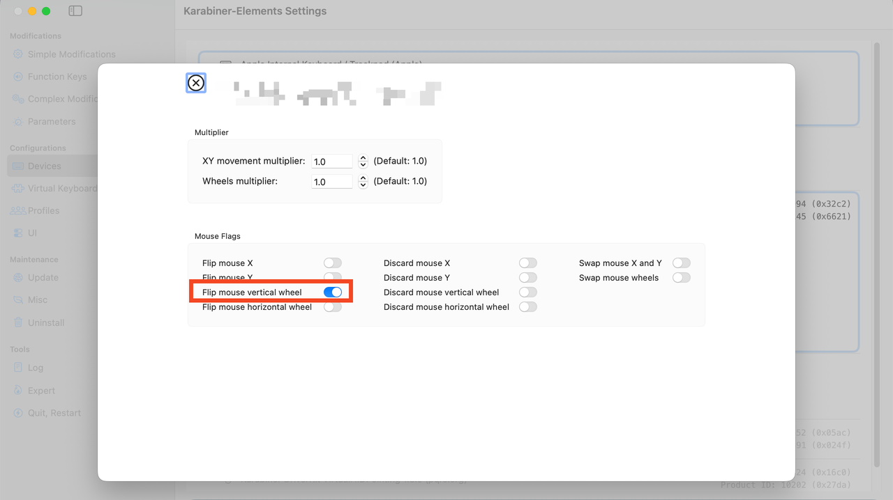

MacBook - Natural Scrolling for Mouse
Problem
If we connect a mouse to macOS, the scrolling direction changes to "unnatural" for the mouse. This is because macOS has a single setting for natural scrolling that applies to both trackpad and mouse.

Solution
To have natural scrolling for both trackpad and mouse, we can use third-party tools like UnnaturalScrollWheels.
If we already use Karabiner-Elements, we can use it to set natural scrolling for mouse separately.
Open Karabiner-Elements and go to the "Devices" tab, select your mouse, and click on "Open mouse settings".

In the mouse settings, check the "Flip mouse vertical wheel" option.

Now, both trackpad and mouse will have natural scrolling.
Need further help with this? Feel free to send a message.

Anand Reddy Pandikunta (ChillarAnand)
Improving Health & Wealth with Technology